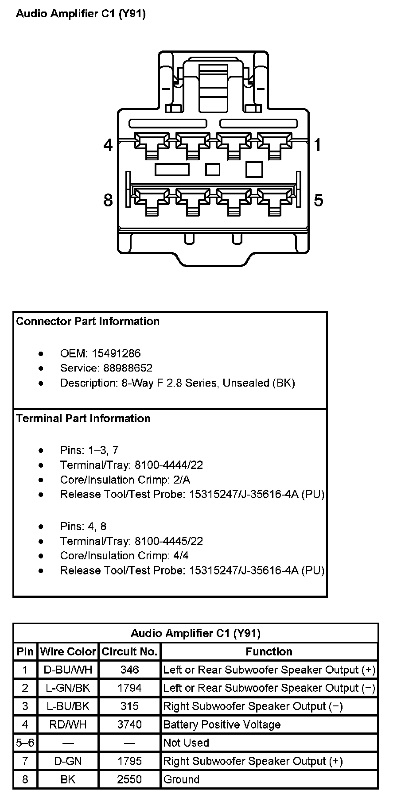
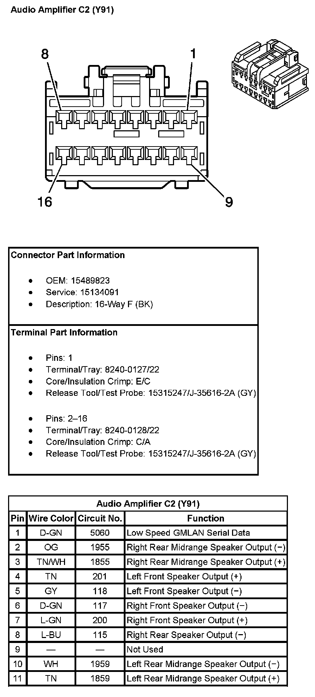
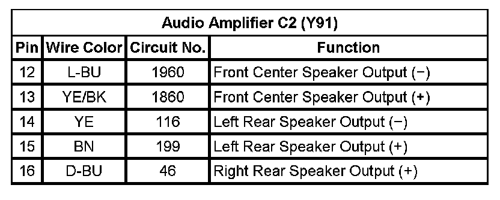
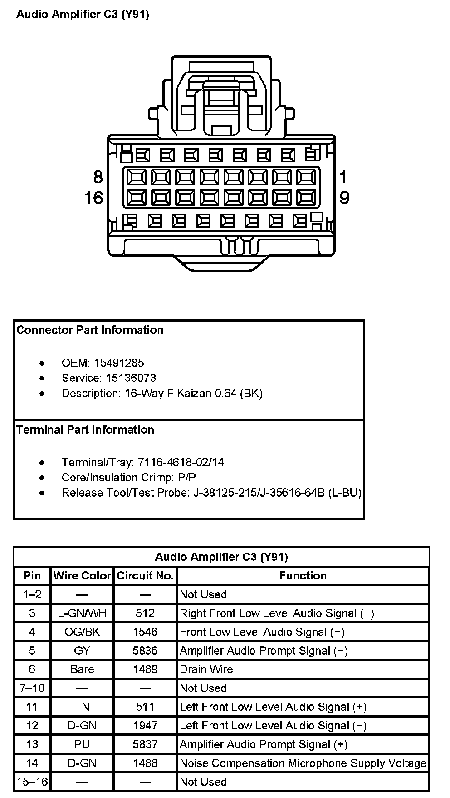

Operation CHARM
: Car repair manuals for everyone.
Home
>>
Cadillac
>>
2007
>>
Escalade ESV AWD V8-6.2L
>>
Repair and Diagnosis
>>
Accessories and Optional Equipment
>>
Radio, Stereo, and Compact Disc
>>
Amplifier
>>
Diagrams
>>
Audio Amplifier (With RPO Code Y91)
Audio Amplifier (With RPO Code Y91)
Audio Amplifier C1 (With RPO Code Y91):

Audio Amplifier C2 (With RPO Code Y91) (Pin 1 To 11):

Audio Amplifier C2 (With RPO Code Y91) (Pin 12 To 16):

Audio Amplifier C3 (With RPO Code Y91):
